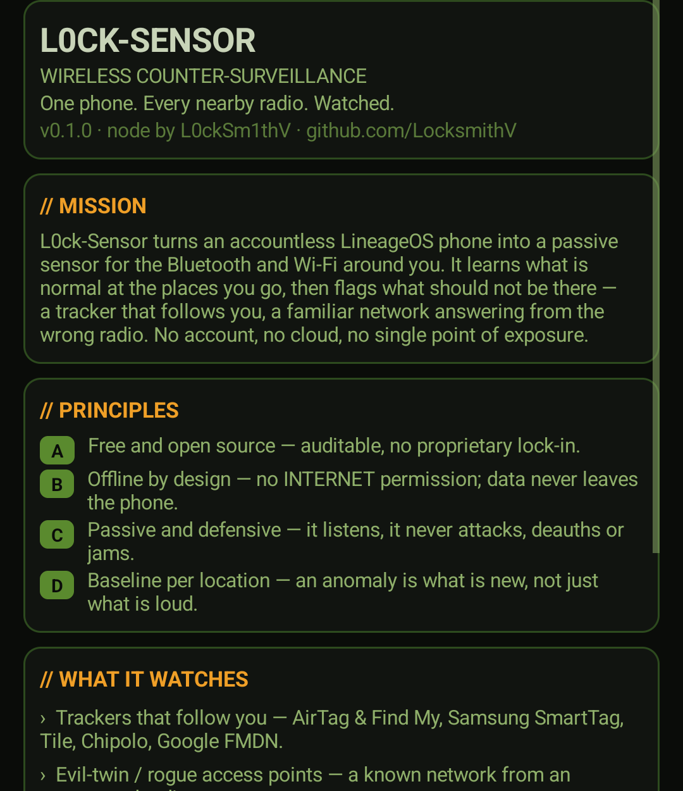

L0CK-SENSOR
PASSIVE WIRELESS COUNTER-SURVEILLANCE
One phone. Every nearby radio. Watched.
DEFENSIVE · PASSIVE · OFFLINE — IT LISTENS, IT NEVER ATTACKS.
</> github.com/LocksmithVL0ck-Sensor turns an accountless LineageOS phone into a passive sensor for the Bluetooth and Wi-Fi around you. It learns what is normal at the places you go, then flags what should not be there — a tracker that follows you, a familiar network answering from the wrong radio.
No account, no cloud, no single point of exposure. The trail you leave is the trail they follow; this watches the other direction.
- A Free and open source — auditable, no proprietary lock-in.
- B Offline by design — no INTERNET permission; data never leaves the phone.
- C Passive and defensive — it never attacks, deauths or jams.
- D Baseline per location — an anomaly is what is new, not just what is loud.

Device list, distance and trend, per-location baseline, alerts — in one view.
Baselines and operational detail stay on the device by design. Code and documentation live on GitHub.